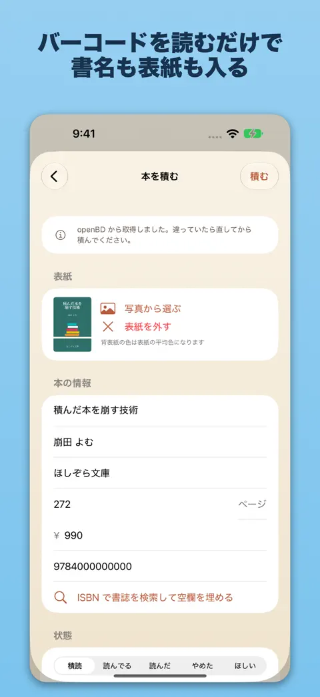
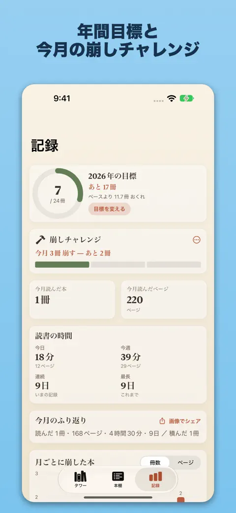

読書記録アプリ（iPhone）
積読記録
積読を、本のタワーに。
読んで崩そう。
買ったのにまだ読んでいない本（積読・積ん読）を、背表紙のタワーとして積み上げて見せる読書記録アプリ。厚みはページ数、色は表紙の色。読み終えた本を抜いて、タワーを崩していこう。
- バーコードで登録
- 読書タイマー
- ウィジェット
- 会員登録なし
無料・広告あり／iPhone（iOS 18 以降）


アプリの画面
積読記録とは？
積読記録は、買ったのにまだ読んでいない本（積読・積ん読）を、背表紙のタワーとして積み上げて見せる読書記録アプリ。バーコードで登録、読書タイマー、崩しチャレンジ、ウィジェット、図書館の返却日のお知らせつき。会員登録なし。無料（広告あり）のiPhoneアプリ。
こんな人に：本を買うのが好きで、積読がたまりがちな人。
- 料金無料・広告あり
- 対応iPhone（iOS 18 以降）
- ジャンル📒 くらし・記録





← 横にスクロールできます →
こんな人におすすめ
- 本を買うのが好きで、積読がたまりがちな人
- 読書の記録を、楽しく続けたい人
- 図書館の返却日をうっかり忘れがちな人
遊び方は3ステップ
- 積む本の裏のバーコードをカメラで読むだけで、書名・ページ数・表紙が入ります。
- ながめる積読がタワーになり、冊数が増えるほどゆらゆら揺れて「崩壊寸前！」。
- 崩す読み終えた本をタワーから抜くと、上の本がストンと落ちてきます。
特徴
- 4つのタワーの見た目本の山・本棚など
- 6つの本棚の分類積読・読んでる・読んだ・やめた・ほしい・図書館
- 前の日図書館の返却日返却日の前日にお知らせ
- 月ごとふり返りカード画像にしてシェアできる
🆕 さいきんのアップデート
💬 よく聞かれること
積読を管理するアプリは？
積読記録は、まだ読んでいない本を背表紙のタワーにして見せる読書記録アプリです。本の裏のバーコードを読むだけで登録できます。無料（広告あり）です。
📖 ことばの説明
- 積読
- 買ったのに、まだ読んでいない本のこと（積ん読）。
どんなアプリ？
買ったのにまだ読んでいない本（積読）を、背表紙のタワーにして見せるアプリです。厚みはページ数、色は表紙の色。たくさん積むほどタワーはゆらゆら揺れて、やがて「崩壊寸前！」になります。読み終えた本はタワーから抜いて、少しずつ崩していきましょう。
くわしい使い方
- 本を積む：「タワー」の右上の ＋ から、本の裏のバーコード（978 / 979 で始まるほう）をカメラで読みます。書名・著者・ページ数・表紙などが入ります。バーコードがなくても、「タイトルで探す」で書名から探して候補を選べます。ISBN の入力や手入力は「ほかの登録方法」からどうぞ
- 読み終えたら抜く：タワーの本をタップして「読み終わった！タワーから抜く」を押すと、本が抜けて上の本が落ちてきます
- 読書タイマー：本の詳細の「読む」で、読んだ時間とページを記録します。アプリを閉じてもタイマーは続きます。毎日読むと連続記録がのびます
- 記録：今年の目標冊数、今月の「崩しチャレンジ」、月ごとのグラフ、ふり返りカードが見られます
- 本棚：積読・読んでる・読んだ・やめた・ほしい・図書館 で絞り込み、検索、タグ付けができます
- ウィジェット：ホーム画面に、いま読んでいる本・進み具合・連続日数を表示できます
よくある質問
無料ですか？
はい、無料でダウンロードして遊べます（広告あり）。App Store のページからどうぞ。
どの端末で使えますか？
iPhone（iOS 18 以降）で使えます。Android 版はありません。
バーコードを読んでも本が見つからない
本の情報は、openBD と Google Books（タイトルで探すときは国立国会図書館サーチも）から調べています。どちらにも載っていない本や、電波がないときは、手入力の画面になります。あとで本の「編集」から「ISBN で書誌を検索して空欄を埋める」で、もう一度調べることもできます。
バーコードが2つある
日本の本には、上下2段のバーコードがあります。978 か 979 で始まるほう（ふつうは上の段）を写してください。下の段（192 で始まるもの）は読みません。
図書館の返却日のお知らせが来ない
返却日の前日の夜7時にお知らせします。iPhone の「設定」→「通知」→「積読記録」で、通知がオンになっているか確認してください。
ウィジェットが出てこない・更新されない
ホーム画面を長押しして、左上の ＋ から「積読記録」を選んでください。表示は、アプリを開いたときや、本・タイマーの記録が変わったときに新しくなります。
記録を消したい・引き継ぎたい
記録はこの iPhone の中にだけ保存しています。アプリを削除すると記録も消えます。ほかの端末への引き継ぎにはまだ対応していません。
会員登録は必要？
いりません。アカウントもログインもありません。
広告は出ますか？
「本棚」と「記録」の画面の下に、小さな広告（Google AdMob）が出ます。タワーや読書タイマーの画面には出しません。
どんな情報が送られますか？
書誌の検索のため、ISBN または入力したタイトル（検索語）を openBD / Google Books / 国立国会図書館サーチに送ります。名前やアカウントなどは送りません。くわしくはプライバシーポリシーをご覧ください。
お問い合わせ
不具合やご要望は、メールでお知らせください。お使いの iPhone の機種と iOS のバージョンを書いていただけると助かります。